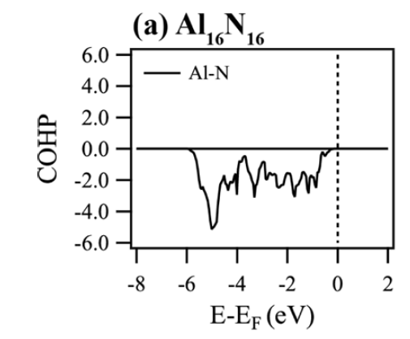
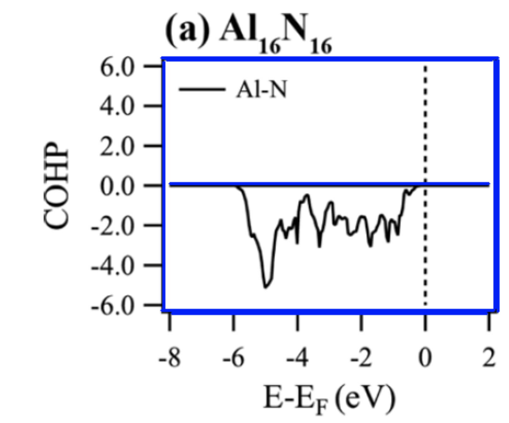
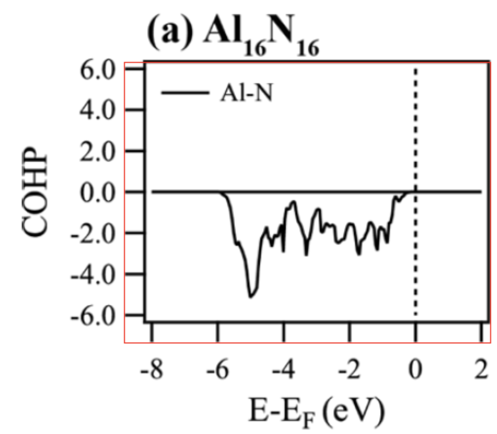
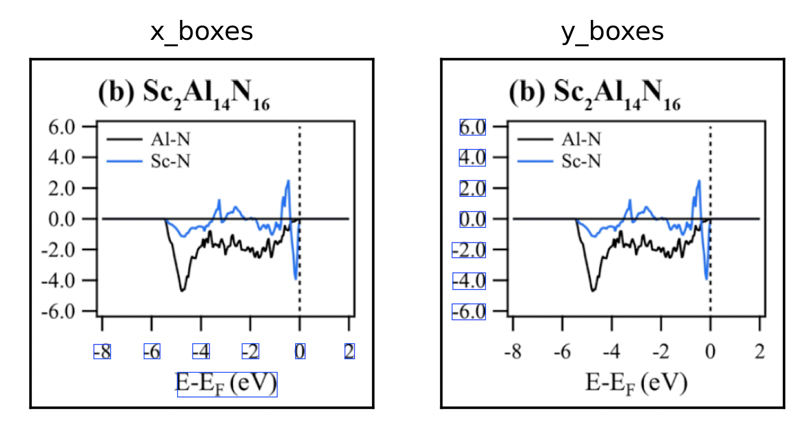
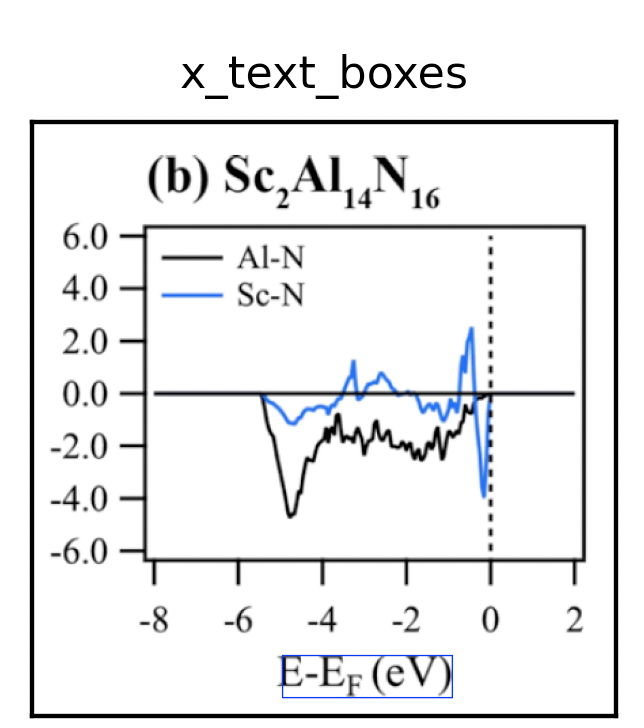
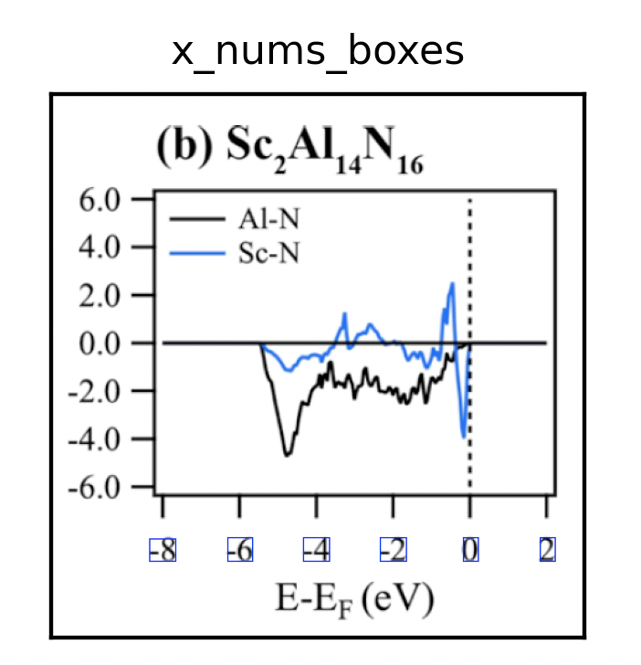
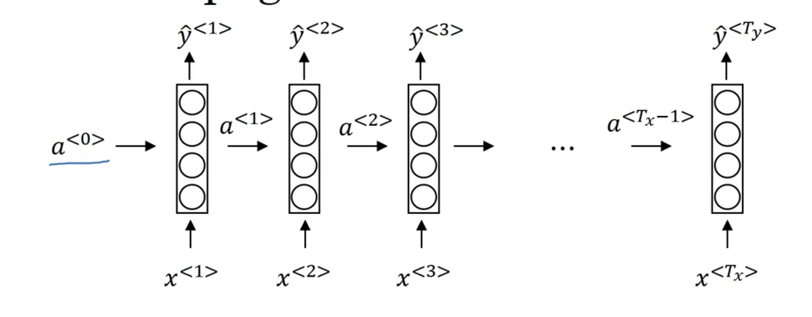

Intro
我的毕设论文题目是：科学文献中曲线信息自动提取算法，简单来说就是写一个算法能够从统计图中提取出曲线的信息(包括说明文字)，以及曲线每个点的对应的值。
基本思路
目标提取
读取一张图片

canny边缘检测+霍夫直线检测检测出水平线和竖直线。

提取出最长的两根，根据这两条线求外接矩形得把图像分为象限内和象限外两部分

然后使用MSER算法和NMS算法，分别检测X轴，Y轴外侧的文字。

可以看到X轴下方有文字和数字两类，数字总是在靠近坐标轴一侧。因此我们从上往下扫描，碰到的第一行检测框即为数字，剩下的为描述文字。根据此方法过滤出数字和描述文字。


字符识别算法
RNN

$a^{
$y^{
定义某个时间步t的损失函数（交叉熵损失函数）：
$L^{
$y的结果是0或1，\hat y是预测值范围在0到1$
由此可以定义整个网络的损失函数
$L(\hat{y}, y) = \sum_{t=1}^{T_y} L^{
最后通过反向传播算法求权重。